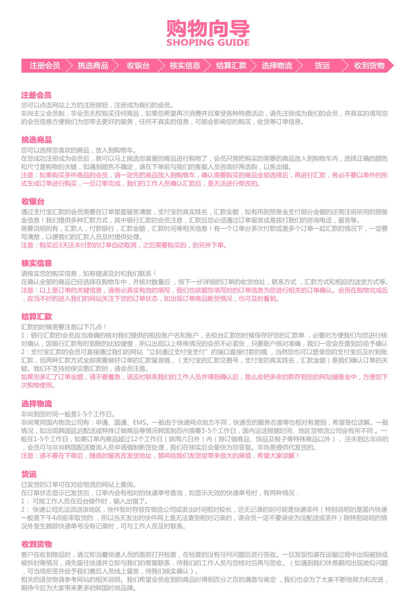
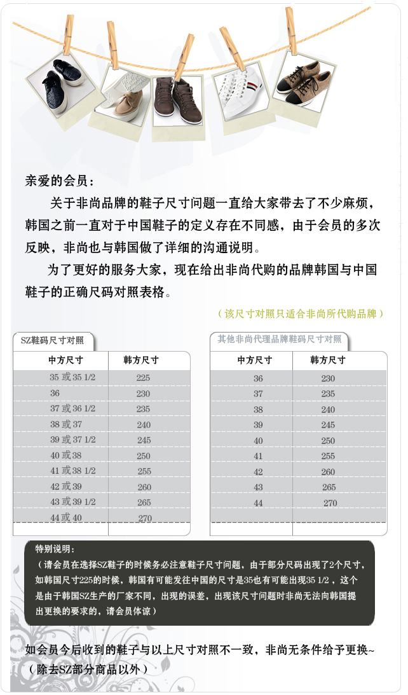
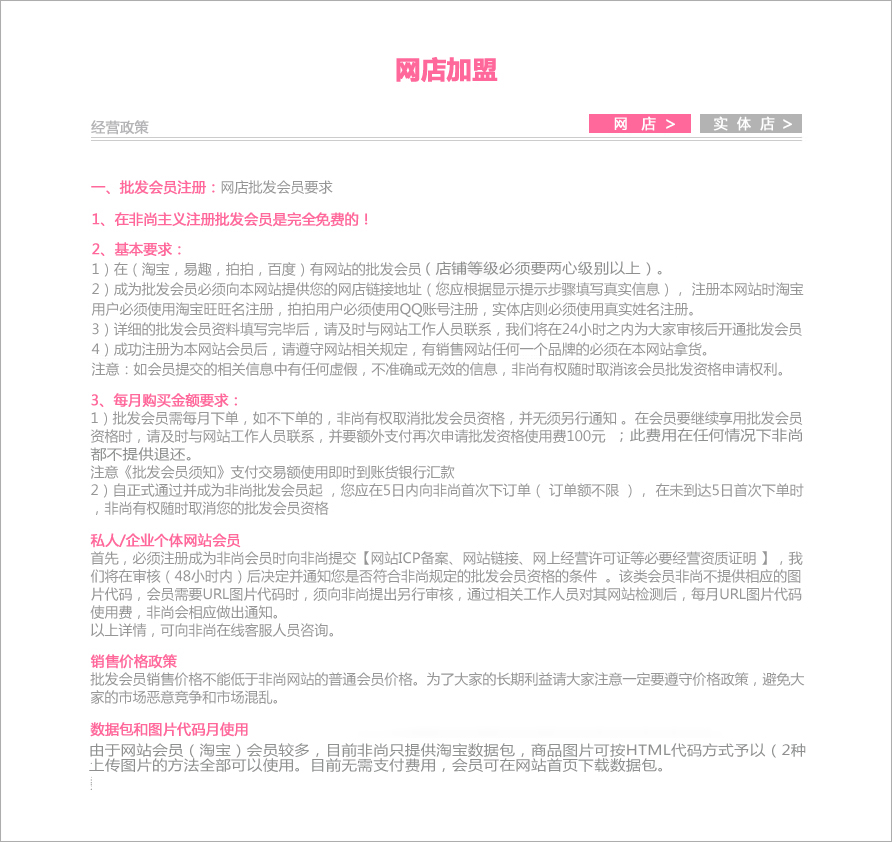
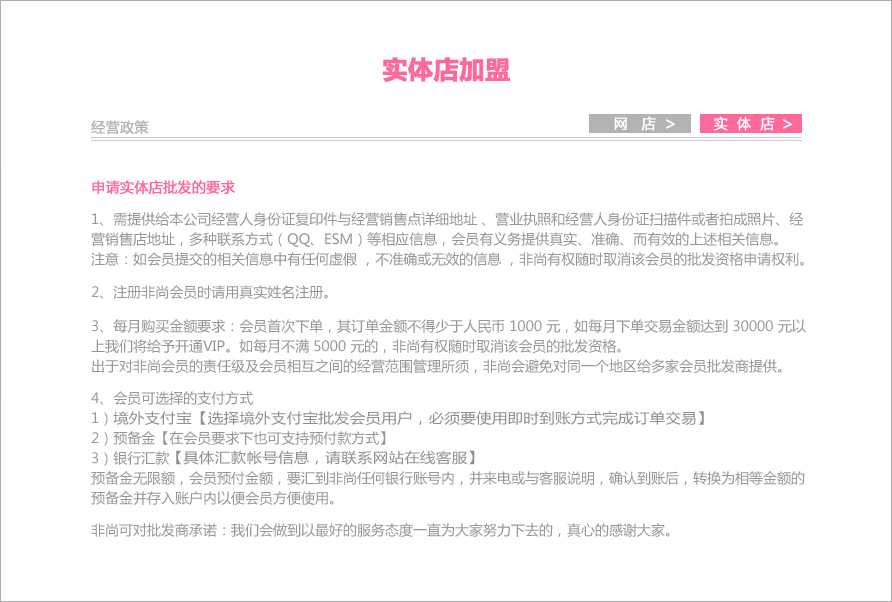

- 关于我们
- 购物向导
- 配送相关
- 常见问题
- 退换政策
- 加盟批发
多元化发展的网站
专业提供各大商业购物网站的批发、零售、代购、代销，以优惠的价格，优质的服务为各类买家提供所需要的韩国商品，并借助毗邻韩国的优势的地理位置享受到低廉的国际运费，节省商品成本，成为国内最专业的服装购物网站。
领先潮流的时尚追求
随着电子商务的发展，网上购物早已不是什么新鲜事了，但是对于越来越多变的市场需求，更多的人希望能购买到与众不同的东西，非尚主义领先在这块市场上崛起，为广大消费者，提供韩国服装服饰的代购服务。成功开启了中国对韩国服饰的电子商务大门，掀起了韩国服饰的购物热潮。在为会员打造更安全高效的网络交易平台的同时，非尚也全心建立一种愉快舒心的网上购物氛围，已成为网民们网上购物和领略时尚流行的最佳之选。
非同凡响的非尚
商品种类多：韩国几十种知名品牌，在线商品五万多种，每天更新200件商品。精华图片：韩国网站专用图片，唯一授权使用合作商，最优秀的模特共同精心打造出产品图片，一个产品附带至少20张组图，让消费者从不同侧面了解产品。

配送方式
非尚常用国内物流公司有：圆通，申通，顺丰，EMS。一般由于快递网点地方不同.快递员服务态度等也相对有差别.希望各位体谅。
到货时间
非尚一般的到货时间为5-10个工作日。一般情况，如不出现延迟等情况韩国到苏州需要3~5个工作日，国内运送根据时间、地区或物流公司会有所不同,一般在 1~5个工作日非尚是提供代发货的。需要会员注意的是，请不要在下好定单后，随意的留言修改发货地址等，那样将造成我们发货组很大的麻烦，希望大家体谅。
退换货基本原则
客户在收到物品时：
请立即当着快递人员打开检查。如发现外包装在运输过程中出现破损或有拆封等情况，请先留住快递员并立即于非尚电话联系（400-8851-590）待我们工作人员与您核对无误后再于签收.（如遇到非尚休息期间出现此类问题，可当场拒签，并给予我们售后人员线上留言）
可（退）换货产品：
由于非尚工作失误（如：颜色，尺寸，型号或翻译错误）而出现的问题，我们将无条件的给予退回，运输而产生的返还运费也由非尚承担。
因每台电脑显示器的问题而出现的视觉色差或商品尺寸因国家的不同量法出现的尺寸偏差，此类问题并非质量问题不得给于退换,请大家在选购时务必谨慎。
退换货的受理时间：
务必在您签收到货的48小时内向非尚工作人员提出退换货申请，并详细说明退换货的原因以便我们可以更快更好的为你解决。待得到非尚工作人员确认后请在3天内把物品（包括包装袋,掉牌等商品原有信息完好）退回非尚公司(退回商品请一定使用快递,EMS等特殊物流退回出现的邮费差价问题非尚不予承担.退回时请用便签等小纸条写上旺旺号与订单号（代发货会员可提供订单号等信息给予客户填写）
注意以下情况也不予退换商品:
1、超过非尚规定的商品退换期限
商品有洗涤等痕迹
2、退换前没有事先与非尚工作人员进行任何联系或退换前没有得到非尚工作人员的同意
3、针织、细致材质的轻微吊线脱线脱毛。尺寸大小不合穿、与网站标识的尺寸有细微出入，商品“MADE IN CHINA”等个人主观性的问题，均不属于质量问题。
4、不影响穿着效果的小瑕疵
特别提醒：
如退回的货物，非尚在收到后，核实发现实际问题与买家提供的照片问题是不一致的或者照片夸大问题的，非尚概不处理此订单货物，一律退回给买家。
特别说明：
有些韩国商品可能到货时间比较缓慢，超过了非尚所说的正常到货时间范围！特别是韩国的包包，饰品，鞋子等。在韩国没有通知非尚断货的情况下可能延迟的比较厉害，那我们会根据时间周期考虑是否强制做退货处理！也希望会员不要随意由于时间等待比预期过长而要求退货！
（特指：SZ的部分商品到货本身缓慢，部分商品是订货后韩国再进行生产，那这种情况下可能延迟时间过长，这种情况是不允许退货的！所以希望会员可以在咨询我们后慎重选择！）
韩国小件物品，易碎品（包括：饰品 眼镜等）破损韩国饰品非尚不给予退换（易损品有所损坏，非尚不承担任何责任）
韩国鞋码对照表

问：可以一次订购多件商品吗？
答：当然可以咯。把你需要的商品存入购物车里，最后再一次性订购。购物车是会员登陆以后才可以使用的，在您退出购物车后也会自动显示为空。
问：可以修改已支付完成的订单吗？
答：非常抱歉！不可以的哦，订单支付确认成功，并在工作人员确认订单后是不可以修改或取消的哦，当然在您还没有确认到最后一步的确认付款时，订单是完全可以由您更改的哦！
问：关于网站的购物车和收藏夹的区别？
答：收藏夹是把您中意的商品暂时存放在里面，只要在不断货的情况下，您在下次登录时去里面还是可以看到的，方便了您的购买。但是购物车里面存放的商品只能在本次登陆时可用，退出后重新登陆时看不到的，系统会自动清除哦!
问：怎样取消订单？
答：取消订单分为两种：
1.订单完成后未汇款的时候，我们在3天内未收到您的货款，非尚会为您自动取消订单。
2.当天已付款单当天就想取消，在非尚工作人员还没有向韩国进货的时候，请及时联系我们，在得到我们工作人员确认后，会按照您的要求退还资金并取消订单。
问：非尚订单的受理时间？
答：非尚提供24小时网上订购系统，您可以在任何时间订购商品，我们工作人员的受理时间为：周一到周六9:00~17:30周日：休息 国定假日休息时间请注意公告！
问：非尚支持哪些支付方式？
答：非尚提供银行汇款，也支持支付宝汇款。
问：要如何通知你们我已付款？
答：在您汇款后，请与我们负责汇款的工作人员进行联系，并说明汇款订单的金额，汇款银行，汇款银行账户及汇款用户名等可靠信息；通过支付宝汇款的请说明支付宝账号，所汇金额等详细信息，得到我们工作人员的确认后，我们会马上帮您进行订单状态的更改和确认。
一、关于商品签收：
客户在收到产品时，请立即当着快递人员打开检查。如发现包装破损，货物件数与快递单所写数量不一致，所发货物有误等，请暂时不要签收，务必先留住快递人员并立即于我们电话联系（400-8851-590）待我们工作人员与您核对物品确认无误后再予签收，如遇到非尚休息期间出现此类问题，可当场拒签，并给予我们售后人员线上留言；
二、可（退）换货产品：
由于非尚工作失误（如：颜色，尺寸，型号或翻译错误）而出现的问题，我们将无条件的给予退回，运输而产生的返还运费也由非尚承担。 因每台电脑显示器的问题而出现的视觉色差或商品尺寸因国家的不同量法出现的尺寸偏差，此类问题并非质量问题不得给于退换,请大家在选购时务必谨慎；
三、退换货流程：
务必在您签收到货的48小时内向非尚工作人员提出退换货申请，并详细说明退换货的原因以便我们可以更快更好的为你解决。待得到非尚工作人员确认后请在3天内把物品（包括包装袋,掉牌标签等商品原有信息完好）；
退回商品请一定使用普通快递,EMS等特殊物流退回出现的邮费差价问题非尚不予承担.退回时请用便签等小纸条写上旺旺号与订单号（代发货会员可提供订单号等信息给予客户填写）；
退回商品请务必不要使用快递到付，所有到付的快件本公司是不予签收的。退回货物出现的邮费我们将在收到货物确认后退到您的帐户预备金.；
在韩国未断货的情况下，退换货商品只可重订同件商品（对应相对的颜色尺寸），不可要求退款或退换为其他商品，在韩国断货情况下，可直接退款至预备金；
四、不可（退）换货原则：
1、超过非尚规定的商品退换期限或在和我们申请退换货后72小时内。未及时退回商品的。不予退换；
2、商品有穿过或洗涤等痕迹；
3、退换前没有事先与我们进行任何联系或未得到本公司同意的倾向下擅自退回货物（如遇休息时间可留言给我们在线客服）；
4、针织、细致材质的轻微吊线脱线脱毛起毛 商品标有“MADE IN CHINA”等个人主观性的问题，均不属于质量问题；
5、尺寸大小不合穿、与网站标识的尺寸有细微出入，尺寸误差不超过3厘米的不可申请退款；
6、颜色较深的衣服（特别是牛仔等）掉色不可申请退款；
7、退回的商品与申请退换时描述和照片有不符的 将不予处理 商品将返回给会员 产生的邮费由会员自身承担；
现货不退换
特别说明：
使用积分进行无理由退换商品时，不包含以下商品：
1、所有定做商品；
2、所有鞋子、包包、配饰不可退换;
3、网外代购商品；
4、参加活动打折商品或现货商品
六、积分发放办法：
自2013年11月起，非尚将实行新的积分赠送方式，停用之前之前的积分赠送方式，
之前的方法是：所购商品在状态更新至”国内已发货“时赠送所购商品金额的0.5%(更早的时候为1%)作为积分并一直累加。
新赠送方式为：1.每月1号清除上月未使用的积分，2.得到上月所有订单中商品状态为韩国已发货对应的总金额的1%的积分。
2017年3月1号起开始实行积分翻倍送，即由原来韩国发货状态下总金额的1%增加到2%。

